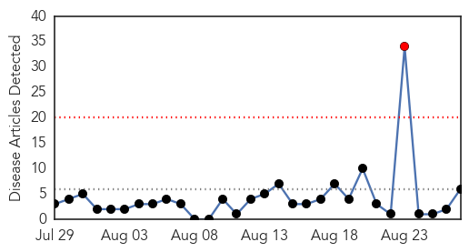
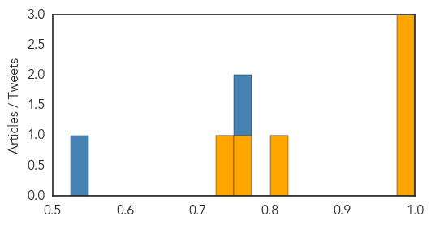
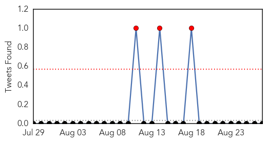

Cholera
30-Day Web Trend
1 alerts, 0 warnings

30-Day Twitter Trend
2 alerts, 0 warnings

Article Locations

Article Confidences
Top Articles:
- 0.998
- 60 patients test positive for cholera in Valley
- 0.997
- Uganda using Twitter to detect disease outbreaks
- 0.997
- All water samples from Kathmandu found hazardous: DPHO
- 0.809
- Valneva licenses EB66 technology to develop human, veterinary vaccines
- 0.751
- Mathematical models show one dose of Shanchol may be sufficient during epidemics
- 0.738
- Haiti: US to Re-Write Haiti Constitution to Better Service the One Percent
Top Tweets:
- 0.874
- TBT: Responding to a cholera outbreak in Nigeria (1970) WHO’s Dr Raška briefs on International Health Regulations https://t.co/t1u3UTknuz
- 0.864
- Single Cholera Vaccine Dose May Slow Cholera Epidemics: New post discusses publication. http://t.co/0sPIn8Q9Zo
Dengue Fever
30-Day Web Trend
0 alerts, 0 warnings

30-Day Twitter Trend
3 alerts, 0 warnings

Article Locations

Article Confidences

Top Articles:
Top Tweets:
- 0.714
- Flavivirus news: 9 more dengue cases reported - Times of India: 9 more dengue cases reportedTim... http://t.co/6k5iyA5f4B pathogenposse